<!DOCTYPE html><html lang="zh-Hans" data-theme="light"><head><meta charset="UTF-8"><meta http-equiv="X-UA-Compatible" content="IE=edge"><meta name="viewport" content="width=device-width, initial-scale=1.0, maximum-scale=1.0, user-scalable=no"><title>如何写复杂业务系统 | 守株阁</title><meta name="author" content="magicliang"><meta name="copyright" content="magicliang"><meta name="format-detection" content="telephone=no"><meta name="theme-color" content="#ffffff"><meta name="description" content="引言本文只是一家之言。 本文是一系列文章的缩略版本（完整版只写了个开头），尽量只讲具体的东西，如果有东西太干了，没有具体的“体感”，是作者的责任。 不喜欢看纯理论分析的可以跳到单一系统层次和模块设计（大多数人可能更加关注这一节，其实前面的部分更重要）。 几个很干的原则 解决复杂问题要用高级思维，不要用低级思维。 蚂蚁&#x2F;ebay 等若干家企业架构师四大原则 - 听过的可以往下跳： 分治（其他所有原">
<meta property="og:type" content="article">
<meta property="og:title" content="如何写复杂业务系统">
<meta property="og:url" content="http://magicliang.github.io/2022/01/07/%E5%A6%82%E4%BD%95%E5%86%99%E5%A4%8D%E6%9D%82%E4%B8%9A%E5%8A%A1%E7%B3%BB%E7%BB%9F/index.html">
<meta property="og:site_name" content="守株阁">
<meta property="og:description" content="引言本文只是一家之言。 本文是一系列文章的缩略版本（完整版只写了个开头），尽量只讲具体的东西，如果有东西太干了，没有具体的“体感”，是作者的责任。 不喜欢看纯理论分析的可以跳到单一系统层次和模块设计（大多数人可能更加关注这一节，其实前面的部分更重要）。 几个很干的原则 解决复杂问题要用高级思维，不要用低级思维。 蚂蚁&#x2F;ebay 等若干家企业架构师四大原则 - 听过的可以往下跳： 分治（其他所有原">
<meta property="og:locale">
<meta property="og:image" content="http://magicliang.github.io/2022/01/07/%E5%A6%82%E4%BD%95%E5%86%99%E5%A4%8D%E6%9D%82%E4%B8%9A%E5%8A%A1%E7%B3%BB%E7%BB%9F/clean-architecture.png">
<meta property="article:published_time" content="2022-01-07T05:38:33.000Z">
<meta property="article:modified_time" content="2023-09-06T03:27:46.000Z">
<meta property="article:author" content="magicliang">
<meta property="article:tag" content="系统架构">
<meta name="twitter:card" content="summary">
<meta name="twitter:image" content="http://magicliang.github.io/2022/01/07/%E5%A6%82%E4%BD%95%E5%86%99%E5%A4%8D%E6%9D%82%E4%B8%9A%E5%8A%A1%E7%B3%BB%E7%BB%9F/clean-architecture.png"><link rel="shortcut icon" href="/img/favicon.png"><link rel="canonical" href="http://magicliang.github.io/2022/01/07/%E5%A6%82%E4%BD%95%E5%86%99%E5%A4%8D%E6%9D%82%E4%B8%9A%E5%8A%A1%E7%B3%BB%E7%BB%9F/"><link rel="preconnect" href="//cdn.jsdelivr.net"/><link rel="preconnect" href="//busuanzi.ibruce.info"/><link rel="stylesheet" href="/css/index.css"><link rel="stylesheet" href="https://cdn.jsdelivr.net/npm/@fortawesome/fontawesome-free/css/all.min.css" media="print" onload="this.media='all'"><link rel="stylesheet" href="https://cdn.jsdelivr.net/npm/node-snackbar/dist/snackbar.min.css" media="print" onload="this.media='all'"><link rel="stylesheet" href="https://cdn.jsdelivr.net/npm/@fancyapps/ui/dist/fancybox.min.css" media="print" onload="this.media='all'"><script>const GLOBAL_CONFIG = { 
  root: '/',
  algolia: undefined,
  localSearch: undefined,
  translate: {"defaultEncoding":1,"translateDelay":0,"msgToTraditionalChinese":"繁","msgToSimplifiedChinese":"簡"},
  noticeOutdate: undefined,
  highlight: {"plugin":"highlighjs","highlightCopy":true,"highlightLang":true,"highlightHeightLimit":false},
  copy: {
    success: 'Copy successfully',
    error: 'Copy error',
    noSupport: 'The browser does not support'
  },
  relativeDate: {
    homepage: true,
    post: true
  },
  runtime: 'days',
  date_suffix: {
    just: 'Just',
    min: 'minutes ago',
    hour: 'hours ago',
    day: 'days ago',
    month: 'months ago'
  },
  copyright: {"limitCount":50,"languages":{"author":"Author: magicliang","link":"Link: ","source":"Source: 守株阁","info":"Copyright is owned by the author. For commercial reprints, please contact the author for authorization. For non-commercial reprints, please indicate the source."}},
  lightbox: 'fancybox',
  Snackbar: {"chs_to_cht":"Traditional Chinese Activated Manually","cht_to_chs":"Simplified Chinese Activated Manually","day_to_night":"Dark Mode Activated Manually","night_to_day":"Light Mode Activated Manually","bgLight":"#49b1f5","bgDark":"#2d3035","position":"bottom-left"},
  source: {
    justifiedGallery: {
      js: 'https://cdn.jsdelivr.net/npm/flickr-justified-gallery/dist/fjGallery.min.js',
      css: 'https://cdn.jsdelivr.net/npm/flickr-justified-gallery/dist/fjGallery.min.css'
    }
  },
  isPhotoFigcaption: true,
  islazyload: false,
  isAnchor: false
}</script><script id="config-diff">var GLOBAL_CONFIG_SITE = {
  title: '如何写复杂业务系统',
  isPost: true,
  isHome: false,
  isHighlightShrink: false,
  isToc: true,
  postUpdate: '2023-09-06 11:27:46'
}</script><noscript><style type="text/css">
  #nav {
    opacity: 1
  }
  .justified-gallery img {
    opacity: 1
  }

  #recent-posts time,
  #post-meta time {
    display: inline !important
  }
</style></noscript><script>(win=>{
    win.saveToLocal = {
      set: function setWithExpiry(key, value, ttl) {
        if (ttl === 0) return
        const now = new Date()
        const expiryDay = ttl * 86400000
        const item = {
          value: value,
          expiry: now.getTime() + expiryDay,
        }
        localStorage.setItem(key, JSON.stringify(item))
      },

      get: function getWithExpiry(key) {
        const itemStr = localStorage.getItem(key)

        if (!itemStr) {
          return undefined
        }
        const item = JSON.parse(itemStr)
        const now = new Date()

        if (now.getTime() > item.expiry) {
          localStorage.removeItem(key)
          return undefined
        }
        return item.value
      }
    }
  
    win.getScript = url => new Promise((resolve, reject) => {
      const script = document.createElement('script')
      script.src = url
      script.async = true
      script.onerror = reject
      script.onload = script.onreadystatechange = function() {
        const loadState = this.readyState
        if (loadState && loadState !== 'loaded' && loadState !== 'complete') return
        script.onload = script.onreadystatechange = null
        resolve()
      }
      document.head.appendChild(script)
    })
  
      win.activateDarkMode = function () {
        document.documentElement.setAttribute('data-theme', 'dark')
        if (document.querySelector('meta[name="theme-color"]') !== null) {
          document.querySelector('meta[name="theme-color"]').setAttribute('content', '#0d0d0d')
        }
      }
      win.activateLightMode = function () {
        document.documentElement.setAttribute('data-theme', 'light')
        if (document.querySelector('meta[name="theme-color"]') !== null) {
          document.querySelector('meta[name="theme-color"]').setAttribute('content', '#ffffff')
        }
      }
      const t = saveToLocal.get('theme')
    
          if (t === 'dark') activateDarkMode()
          else if (t === 'light') activateLightMode()
        
      const asideStatus = saveToLocal.get('aside-status')
      if (asideStatus !== undefined) {
        if (asideStatus === 'hide') {
          document.documentElement.classList.add('hide-aside')
        } else {
          document.documentElement.classList.remove('hide-aside')
        }
      }
    
    const detectApple = () => {
      if(/iPad|iPhone|iPod|Macintosh/.test(navigator.userAgent)){
        document.documentElement.classList.add('apple')
      }
    }
    detectApple()
    })(window)</script><meta name="generator" content="Hexo 6.3.0"><link rel="alternate" href="/atom.xml" title="守株阁" type="application/atom+xml">
</head><body><div id="sidebar"><div id="menu-mask"></div><div id="sidebar-menus"><div class="avatar-img is-center"></div><div class="sidebar-site-data site-data is-center"><a href="/archives/"><div class="headline">Articles</div><div class="length-num">330</div></a><a href="/tags/"><div class="headline">Tags</div><div class="length-num">185</div></a><a href="/categories/"><div class="headline">Categories</div><div class="length-num">0</div></a></div><hr/></div></div><div class="post" id="body-wrap"><header class="post-bg" id="page-header" style="background-image: url('/2022/01/07/%E5%A6%82%E4%BD%95%E5%86%99%E5%A4%8D%E6%9D%82%E4%B8%9A%E5%8A%A1%E7%B3%BB%E7%BB%9F/clean-architecture.png')"><nav id="nav"><span id="blog_name"><a id="site-name" href="/">守株阁</a></span><div id="menus"><div id="toggle-menu"><a class="site-page"><i class="fas fa-bars fa-fw"></i></a></div></div></nav><div id="post-info"><h1 class="post-title">如何写复杂业务系统</h1><div id="post-meta"><div class="meta-firstline"><span class="post-meta-date"><i class="far fa-calendar-alt fa-fw post-meta-icon"></i><span class="post-meta-label">Created</span><time class="post-meta-date-created" datetime="2022-01-07T05:38:33.000Z" title="Created 2022-01-07 13:38:33">2022-01-07</time><span class="post-meta-separator">|</span><i class="fas fa-history fa-fw post-meta-icon"></i><span class="post-meta-label">Updated</span><time class="post-meta-date-updated" datetime="2023-09-06T03:27:46.000Z" title="Updated 2023-09-06 11:27:46">2023-09-06</time></span></div><div class="meta-secondline"><span class="post-meta-separator">|</span><span class="post-meta-wordcount"><i class="far fa-file-word fa-fw post-meta-icon"></i><span class="post-meta-label">Word count:</span><span class="word-count">3.1k</span><span class="post-meta-separator">|</span><i class="far fa-clock fa-fw post-meta-icon"></i><span class="post-meta-label">Reading time:</span><span>9min</span></span><span class="post-meta-separator">|</span><span class="post-meta-pv-cv" id="" data-flag-title="如何写复杂业务系统"><i class="far fa-eye fa-fw post-meta-icon"></i><span class="post-meta-label">Post View:</span><span id="busuanzi_value_page_pv"><i class="fa-solid fa-spinner fa-spin"></i></span></span></div></div></div></header><main class="layout" id="content-inner"><div id="post"><article class="post-content" id="article-container"><h1 id="引言"><a href="#引言" class="headerlink" title="引言"></a>引言</h1><p>本文只是一家之言。</p>
<p>本文是一系列文章的缩略版本（完整版只写了个开头），尽量只讲具体的东西，如果有东西太干了，没有具体的“体感”，是作者的责任。</p>
<p>不喜欢看纯理论分析的可以跳到<a href="#单一系统层次和模块设计（大多数人可能更加关注这一节，其实前面的部分更重要）">单一系统层次和模块设计（大多数人可能更加关注这一节，其实前面的部分更重要）</a>。</p>
<h1 id="几个很干的原则"><a href="#几个很干的原则" class="headerlink" title="几个很干的原则"></a>几个很干的原则</h1><ul>
<li><strong>解决复杂问题要用高级思维，不要用低级思维。</strong></li>
<li>蚂蚁/ebay 等若干家企业架构师四大原则 - 听过的可以往下跳：<ul>
<li><strong>分治（其他所有原则都是从分治里衍生的）</strong></li>
<li>分层</li>
<li>抽象</li>
<li>演化</li>
</ul>
</li>
<li>solid 5 原则很重要很重要 -很多人读过，很多人可能没有读过，温故知新很重要。</li>
<li>注重过程质量，拿到结果质量。</li>
</ul>
<h1 id="业务系统为什么难写？"><a href="#业务系统为什么难写？" class="headerlink" title="业务系统为什么难写？"></a>业务系统为什么难写？</h1><h2 id="纯粹的业务驱动：技术的输入和决策完全来源于业务同事，甚至只受业务摆布的团队，架构容易混乱"><a href="#纯粹的业务驱动：技术的输入和决策完全来源于业务同事，甚至只受业务摆布的团队，架构容易混乱" class="headerlink" title="纯粹的业务驱动：技术的输入和决策完全来源于业务同事，甚至只受业务摆布的团队，架构容易混乱"></a>纯粹的业务驱动：技术的输入和决策完全来源于业务同事，甚至只受业务摆布的团队，架构容易混乱</h2><ul>
<li>业务又不懂架构、业务又不懂功能点罗列的合理性，业务只会往技术团队身上扔需求。<ul>
<li><strong>怎么把需求和实现分门别类是技术自己的事情</strong>。</li>
<li>但技术人员如果一直都很忙，没有自己的空闲时间或者对设计洁癖的坚持，慢慢地就会养成“<strong>把需求翻译成代码，然后往老的系统里面扔</strong>”（混乱根源 1）的坏习惯- 问题：翻译只是普通的低级思维，不能解决很复杂的问题。</li>
</ul>
</li>
</ul>
<h2 id="不理解业务"><a href="#不理解业务" class="headerlink" title="不理解业务"></a>不理解业务</h2><ul>
<li>盲人摸象，一群瞎子摸大象，摸到耳朵的人以为大象是一把扇子；摸到肚子的人以为大象是一堵墙；摸到鼻子就以为大象是一根管子：<ul>
<li>在复杂业务面前，我们就是瞎子，甚至 pm 都是瞎子。很多时候我们没有机会摸完一头大象，就要做系统设计决策。因此，<strong>我们经常只把系统设计成一把扇子、一堵墙和一根管子（混乱根源 2）</strong>- 问题：定义问题太简单，设计解决方案太简单 。<br>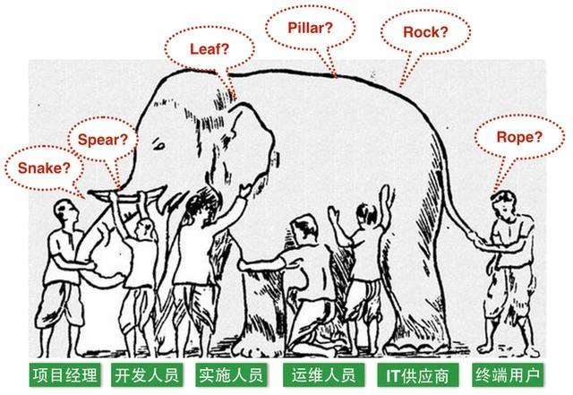</li>
<li>很多时候甚至一个 pm 认为耳朵是扇子，技术人员认为耳朵是一张饼，大家以为达成共识了，实际上概念是割裂的，大家也不愿探讨清楚（<strong>混乱根源 3</strong>）- 问题：技术不要觉得只懂技术就够了，实际上系统的业务越复杂，技术越不重要。</li>
</ul>
</li>
<li>一个系统刚刚设计的时候，最初的架构设计人员已经把层次都分好了。<strong>技术人员有惰性，大多数情况下，不会再在已经划分好的层次里面进行横竖切分，制造小模块和小层次（混乱根源 4）</strong>。大多数工程师能够习得的最趁手的抽象、最万能的抽象，就是一个 service 里的若干个函数，别的东西，大家什么都不会。所以大家只能把逻辑封装进这两个玩意儿里。</li>
<li>…………………………</li>
<li><strong>混乱是一切问题的根源，业务系统的熵值太高以后，新的功能不好加，旧的功能不好改，业务系统成为一个大箩筐，里面的东西就腐化了</strong>。</li>
</ul>
<h1 id="以上问题的抽象解法"><a href="#以上问题的抽象解法" class="headerlink" title="以上问题的抽象解法"></a>以上问题的抽象解法</h1><ul>
<li>技术团队要自己有技术驱动的工程师文化，大家志同道合，齐心合力：<ul>
<li>理解现有系统，<strong>定期架构 review</strong>，更新系统基线</li>
<li>从业务输入出发，规划技术路径</li>
<li>专门做技术改造来推动架构演化。</li>
</ul>
</li>
<li>学业务：<ul>
<li>学业务流程，多读领域故事，以业务输入为老师，请领域专家为老师。</li>
<li>以对特定的领域有百科全书式的理解为目标-大家都不是搞金融的，一样可以成为金融架构师。</li>
<li>注重需求分析和建模，<strong>要先有分析才出设计</strong>，而不是边设计边分析。</li>
</ul>
</li>
<li>注重设计：<ul>
<li>整体架构设计（这是由<strong>定期架构 review</strong>来决定的）。</li>
<li>注重单一系统层次和模块设计，<a href="#单一系统层次和模块设计（大多数人可能更加关注这一节，其实前面的部分更重要）">后面</a>会专门讲。</li>
<li>设计系统的时候要<strong>留有余地（OCP 法则）</strong>，存有敬畏之心。我们应该只把我们摸到的地方设计成一把扇子、一堵墙和一根管子，其他东西留给以后摸到再设计和实现。</li>
<li>要有穷举能力，要有归纳能力，要有演绎能力，要面向不确定性编程。</li>
</ul>
</li>
</ul>
<h1 id="单一系统层次和模块设计（大多数人可能更加关注这一节，其实前面的部分更重要）"><a href="#单一系统层次和模块设计（大多数人可能更加关注这一节，其实前面的部分更重要）" class="headerlink" title="单一系统层次和模块设计（大多数人可能更加关注这一节，其实前面的部分更重要）"></a>单一系统层次和模块设计（大多数人可能更加关注这一节，其实前面的部分更重要）</h1><p>软件工程师做抽象设计的时候，处理的是单元/模块/层次之间的关系，所以要对复杂系统具有横切和竖切的能力。</p>
<h2 id="架构分层和分模块的演进"><a href="#架构分层和分模块的演进" class="headerlink" title="架构分层和分模块的演进"></a>架构分层和分模块的演进</h2><p> 大家都知道系统很复杂， <a target="_blank" rel="noopener" href="https://en.wikipedia.org/wiki/Model%E2%80%93view%E2%80%93controller">MVC 模式</a>的样子：</p>
<p> 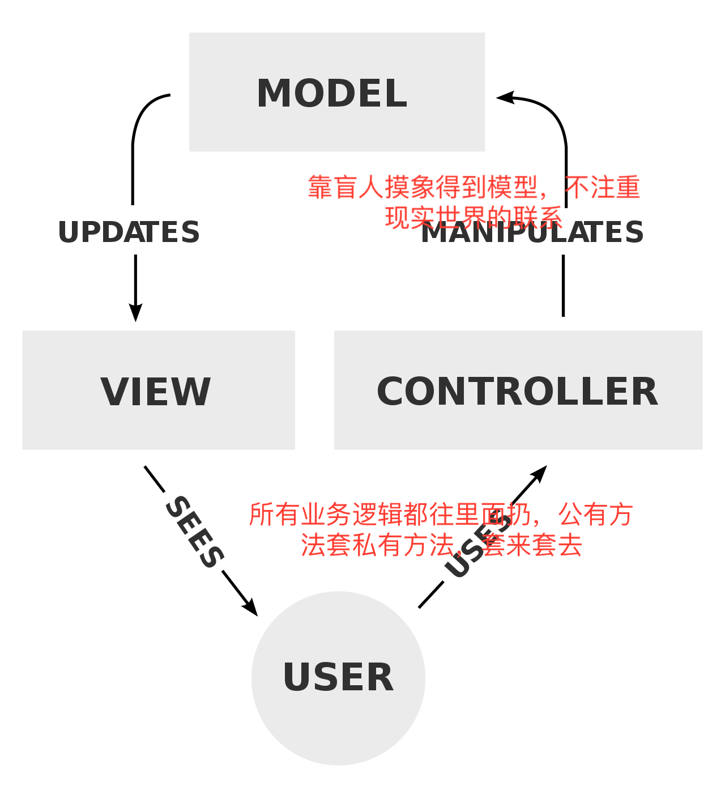</p>
<p>过了十几年，martin fowler 等人开始介绍所谓的<a target="_blank" rel="noopener" href="https://martinfowler.com/bliki/PresentationDomainDataLayering.html">《PresentationDomainDataLayering》</a> 模式（有兴趣的同学可以读这本书<a target="_blank" rel="noopener" href="https://item.jd.com/10060232.html">《企业应用架构模式 [Patterns of Enterprise Application Architecture]》</a>），导致了国内流行了十几年的所谓是三层架构、四层架构：</p>
<p>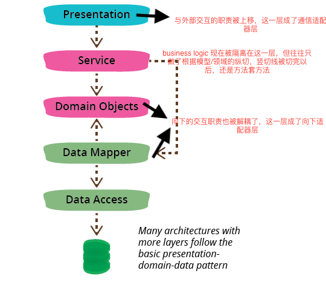</p>
<h2 id="我们团队现在的系统通常是什么样的？"><a href="#我们团队现在的系统通常是什么样的？" class="headerlink" title="我们团队现在的系统通常是什么样的？"></a>我们团队现在的系统通常是什么样的？</h2><p><a href="工程规范之分包规范.drawio">工程规范之分包规范</a><br>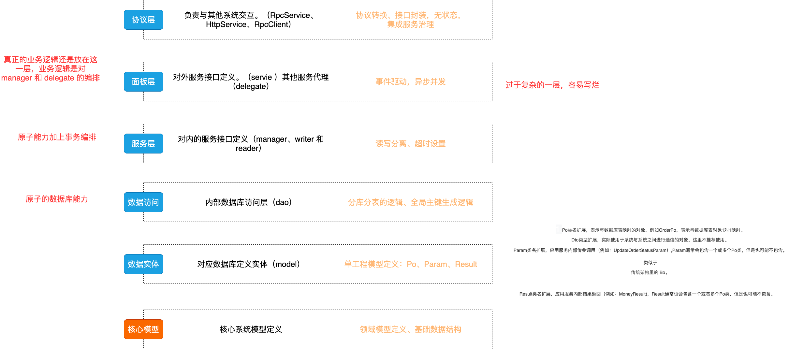</p>
<h2 id="一个烂系统通常是什么样的？"><a href="#一个烂系统通常是什么样的？" class="headerlink" title="一个烂系统通常是什么样的？"></a>一个烂系统通常是什么样的？</h2><p>其实所有烂系统都<strong>没有高度</strong>，别人划分好模块和层次以后，里面都是流水账。特别是 service，上蹿下跳，复杂无比。</p>
<p></p>
<h2 id="好的系统给人的感觉"><a href="#好的系统给人的感觉" class="headerlink" title="好的系统给人的感觉"></a>好的系统给人的感觉</h2><p>好的系统：结构分明、抽象恰当、职责明确、边界清晰。</p>
<p>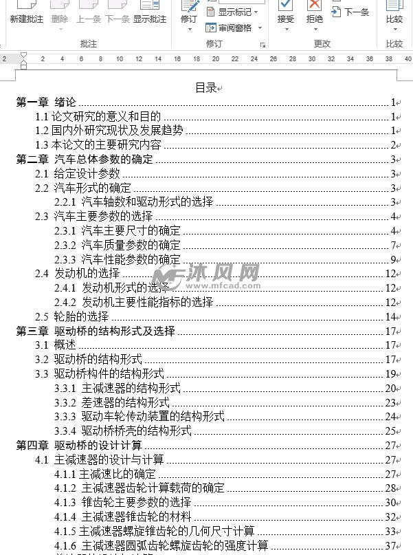</p>
<p>坏的系统如流水账，好的系统如一本好书，局部来看是记叙文（可以使用 transaction script），全局来看是议论文（讨论 why、what、how）。</p>
<h2 id="一个系统应该被设计成什么样？"><a href="#一个系统应该被设计成什么样？" class="headerlink" title="一个系统应该被设计成什么样？"></a>一个系统应该被设计成什么样？</h2><p>没有标准答案，所以大家都乱来。</p>
<p>但合理的设计应该满足一个约束：系统是对业务问题的回答，<strong>系统能力能够支持用例</strong>。</p>
<h3 id="Step1-搞清楚业务用例和系统用例"><a href="#Step1-搞清楚业务用例和系统用例" class="headerlink" title="Step1 搞清楚业务用例和系统用例"></a>Step1 搞清楚业务用例和系统用例</h3><p>当我们收到需求，一开始它是这样：</p>
<p>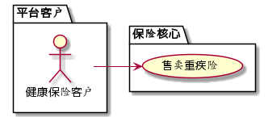</p>
<p>其实这是一个业务视角的<strong>业务用例</strong>，它背后是由若干<strong>系统用例</strong>支撑的：</p>
<p><a target="_blank" rel="noopener" href="https://www.plantuml.com/plantuml/uml/bP6zIWD158NxVOfBggI83s0H0jfO-GoNsMiStPs4-Ib4KeX5WX2qs0GLH1441La4YzK4afVPsILluP2DSLCefXpE-SvympILHgbD67W17MZGRP2yTQZ1vvAOvctXTP0TOul0VhxRoxSyUixw2Pnw0CXqMqB5dZtPSPBExkOtBpP-T6a5K07pkYkq2BE73pixNw164KD53evYEnZDUuDyD7ML1GaX7g7SvOfSPKye8r4msd67Cfb7zrd_AhiOkd4x61PtIa9D-z8dMQwca-liTLfiT_0a9A7N7EBRT98iOyaP5wsrk3V-tWUkb5djLt_rhC5M0webcnfi0nSiC3xz0rmwRWWLvfj1F-yfSrsFGRtU-ECVcYHy4mPV">售卖重疾险业务用例拆解为系统用例</a><br>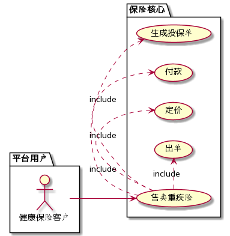</p>
<p>而我们的系统中往往已经有过其他<strong>业务用例</strong>：</p>
<p><a target="_blank" rel="noopener" href="https://www.plantuml.com/plantuml/uml/bP9FIm916CRl-obUFEd1Fa074UhIgS_mCljcKxkZpCmU8Zn41oMIEgZzWIY2e20aw60fw9TnTl5Rj3YMar3i7fVd-Jqxls6gIgFKKHXu0Urfq7MGlBQlmUUIcEPruJMG7MADm7o-cuktfFiSjuTmx04WqtK91NFoP4R3sVHkVlDY1ezfMW1KmBpc3sh3-E73J4yNQAI8eQ8KxWvCfpzlTPB-9AqiI0Zn0EKsLvHMTeIA90f6M-c7IoRT-xXz6P_rqd7JwTb_Ia9Dkz8dwLPdu-luTMAt6tWKaj1kR0Qti_5m6KlEkAZzYbkZxttWIaNklYjXpiT9_sebGJvd6AoVl_YdN0asAb1q54gm2Lom8FApW4knd93LpGUjBc6Tiyhvh2oJNSZsixlOVcQDfiUWNAxyymQh9Fme3Bu0">新老业务和系统用例</a></p>
<p>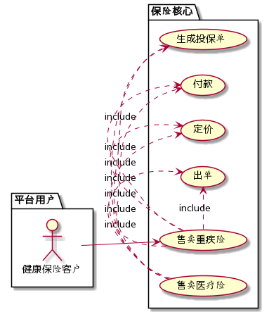</p>
<p>这个地方本来应该画流程图，但没时间不画了，默认用户故事的流程是：</p>
<ol>
<li>生成投保单</li>
<li>定价</li>
<li>付款</li>
<li>出单</li>
</ol>
<h3 id="Step2-用例拆双层，能力也拆双层"><a href="#Step2-用例拆双层，能力也拆双层" class="headerlink" title="Step2  用例拆双层，能力也拆双层"></a>Step2  用例拆双层，能力也拆双层</h3><p>如果用例能够分层（问题空间分层），系统能力也就可以分层（解空间分层），系统实际上就变成这样：</p>
<p><a href="双层能力.drawio">双层能力.drawio</a><br>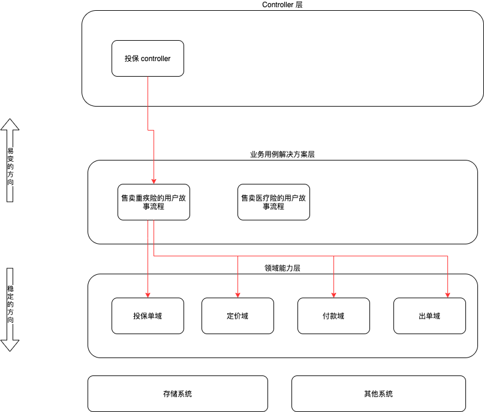</p>
<p>注意看，这里 service 层是一拆二的，很确切地<strong>把系统的内部能力按照用例分解为两层（先横切），然后按照领域进行领域划分（竖切）</strong>-这里是 eric evans 在 ddd 里推荐的一种拆法。</p>
<h3 id="Step3-使用-OOP-来代替-POP，用命令对象来代替函数调用"><a href="#Step3-使用-OOP-来代替-POP，用命令对象来代替函数调用" class="headerlink" title="Step3  使用 OOP 来代替 POP，用命令对象来代替函数调用"></a>Step3  使用 OOP 来代替 POP，用命令对象来代替函数调用</h3><p>业务用例层每个模块内可以这样写：</p>
<figure class="highlight java"><table><tr><td class="gutter"><pre><span class="line">1</span><br><span class="line">2</span><br><span class="line">3</span><br><span class="line">4</span><br><span class="line">5</span><br><span class="line">6</span><br><span class="line">7</span><br><span class="line">8</span><br><span class="line">9</span><br><span class="line">10</span><br><span class="line">11</span><br><span class="line">12</span><br><span class="line">13</span><br><span class="line">14</span><br><span class="line">15</span><br><span class="line">16</span><br><span class="line">17</span><br><span class="line">18</span><br><span class="line">19</span><br></pre></td><td class="code"><pre><code class="hljs java"><span class="hljs-comment">/**</span><br><span class="hljs-comment"> * 医疗险用户故事，旧代码</span><br><span class="hljs-comment"> */</span><br> medicalInsuranceProcess(Request) &#123;<br>   medicalInsuranceToubaodan(xx);<br>   medicalInsurancePricing(xx);<br>   medicalInsurancePay(xx);<br>   medicalInsuranceIssued(xx);<br> &#125;<br><br><span class="hljs-comment">/**</span><br><span class="hljs-comment"> * 重疾险用户故事</span><br><span class="hljs-comment"> */</span><br> majorDiseaseInsuranceProcess(Request) &#123;<br>   majorIllnessInsuranceToubaodan(xx);<br>   majorIllnessInsurancePricing(xx);<br>   majorIllnessInsurancePay(xx);<br>   majorIllnessInsuranceIssued(xx);<br> &#125;<br></code></pre></td></tr></table></figure>
<p>当然也有些人会只写一个 pay 方法，然后在 pay 方法里写 if-else，但这样写的代码一样烂，还是无限接近小学生代码。</p>
<p>如果使用抽象的方法来写，其实会写成这样：</p>
<figure class="highlight java"><table><tr><td class="gutter"><pre><span class="line">1</span><br><span class="line">2</span><br><span class="line">3</span><br><span class="line">4</span><br><span class="line">5</span><br><span class="line">6</span><br><span class="line">7</span><br><span class="line">8</span><br><span class="line">9</span><br><span class="line">10</span><br><span class="line">11</span><br><span class="line">12</span><br><span class="line">13</span><br><span class="line">14</span><br><span class="line">15</span><br><span class="line">16</span><br><span class="line">17</span><br><span class="line">18</span><br><span class="line">19</span><br><span class="line">20</span><br><span class="line">21</span><br><span class="line">22</span><br><span class="line">23</span><br></pre></td><td class="code"><pre><code class="hljs java"><span class="hljs-comment">/**</span><br><span class="hljs-comment"> * 医疗险用户故事，旧代码</span><br><span class="hljs-comment"> */</span><br> medicalInsuranceProcess(Request) &#123;<br>   <span class="hljs-type">Context</span> <span class="hljs-variable">context</span> <span class="hljs-operator">=</span> createContext(request);<br>   <br>   toubaoDanActivity.execute(context);<br>   pricingActivity.execute(context);<br>   payAcivity.execute(context);<br>   issueActivity.execute(context);<br> &#125;<br><br><span class="hljs-comment">/**</span><br><span class="hljs-comment"> * 重疾险用户故事</span><br><span class="hljs-comment"> */</span><br> medicalInsuranceProcess(Request) &#123;<br>   <span class="hljs-type">Context</span> <span class="hljs-variable">context</span> <span class="hljs-operator">=</span> createContext(request);<br><br>   toubaoDanActivity.execute(context);<br>   pricingActivity.execute(context);<br>   payAcivity.execute(context);<br>   issueActivity.execute(context);<br> &#125;<br></code></pre></td></tr></table></figure>
<p>这样做的理由是：</p>
<p>标准的自顶向下设计，越高层的入口应该越抽象，只使用方法嵌套需要设计者的功力极高的功力，不适合大多数人。</p>
<p>流程被完全抽象化了，流程的变动不再是函数套函数，而是对象套对象。对象是一种很适合嵌套和分隔的设计单元，它的多态比函数的重载强大得多。</p>
<p>中国人受贫血模型+事务脚本的设计模式影响太深，很多人都忘记了，23 <strong>种设计模式其实都是使用富血对象</strong>！在设计的过程中，要注重理解行为型设计模式里面组件沟通的思路，选择对象或者方法作为扩展点-<strong>使用方法作为扩展点比较危险</strong>，因为继承的耦合强于组合，总是倾向于桥接到更远端的对象是更好的选择，这就诞生了对象的层次。</p>
<h3 id="Step4-引入策略，把变化拆解到领域原子能力颗粒度"><a href="#Step4-引入策略，把变化拆解到领域原子能力颗粒度" class="headerlink" title="Step4   引入策略，把变化拆解到领域原子能力颗粒度"></a>Step4   引入策略，把变化拆解到领域原子能力颗粒度</h3><p>有人会想，是不是每次新增一个业务用例，我重新派生一个 activity 就行了？</p>
<p>其实大可不必，新的用户故事本身只是对领域能力的重新编排，在每个 activity 中的变动点无非是：</p>
<ol>
<li><strong>使用新的不同的领域能力-这要求我们有新增领域能力的能力</strong>。</li>
<li><strong>编排不同领域能力的顺序-这就要求我们有新增领域顺序的策略</strong>。</li>
</ol>
<p>以定价为例，我们先提供不同的基础领域能力：</p>
<p><a href="双层能力-细化领域.drawio">双层能力-细化领域</a></p>
<p>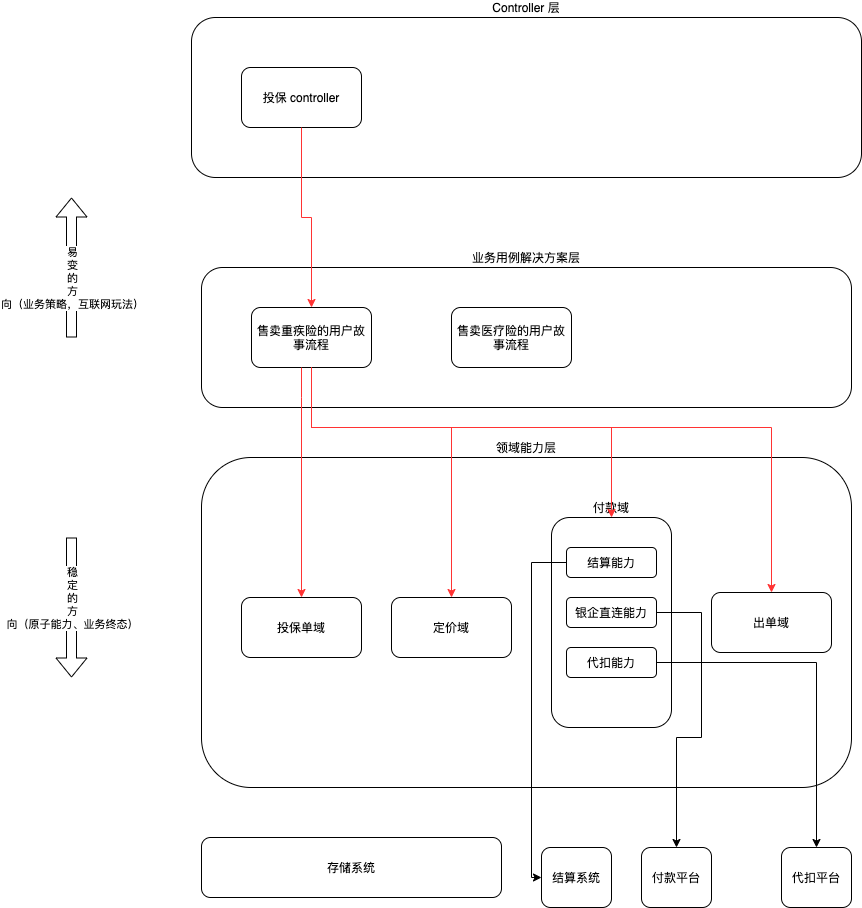</p>
<p>然后用策略模式把他们包装起来：</p>
<figure class="highlight java"><table><tr><td class="gutter"><pre><span class="line">1</span><br><span class="line">2</span><br><span class="line">3</span><br><span class="line">4</span><br><span class="line">5</span><br><span class="line">6</span><br><span class="line">7</span><br><span class="line">8</span><br><span class="line">9</span><br><span class="line">10</span><br><span class="line">11</span><br><span class="line">12</span><br><span class="line">13</span><br><span class="line">14</span><br><span class="line">15</span><br><span class="line">16</span><br><span class="line">17</span><br><span class="line">18</span><br><span class="line">19</span><br><span class="line">20</span><br><span class="line">21</span><br><span class="line">22</span><br><span class="line">23</span><br><span class="line">24</span><br><span class="line">25</span><br><span class="line">26</span><br><span class="line">27</span><br><span class="line">28</span><br><span class="line">29</span><br><span class="line">30</span><br><span class="line">31</span><br><span class="line">32</span><br><span class="line">33</span><br><span class="line">34</span><br><span class="line">35</span><br><span class="line">36</span><br><span class="line">37</span><br></pre></td><td class="code"><pre><code class="hljs java"><span class="hljs-comment">/**</span><br><span class="hljs-comment"> * 重疾险用户故事</span><br><span class="hljs-comment"> */</span><br> majorIllnessInsuranceProcess(Request) &#123;<br>   context = createContext(request);<br><br>   toubaoDanActivity.execute(xx);<br>   pricingActivity.execute(xx);<br>   payAcivity.execute(xx);<br>   issueActivity.execute(xx);<br> &#125;<br><br><span class="hljs-comment">// 分割线</span><br><br><span class="hljs-keyword">public</span> <span class="hljs-keyword">class</span> <span class="hljs-title class_">PayActivity</span> &#123;<br><br>  List&lt;PayStrategy&gt; strategies;<br>  <br>  <span class="hljs-keyword">void</span> <span class="hljs-title function_">pay</span><span class="hljs-params">(Context context)</span> &#123;<br>    <span class="hljs-keyword">for</span> (PayStrategy strategy : strategies) &#123;<br>      <span class="hljs-keyword">if</span> (context.isActivated()) &#123;<br>        strategy.execute(context);<br>      &#125;<br>    &#125;<br>  &#125;<br>&#125;<br><br><span class="hljs-keyword">public</span> <span class="hljs-keyword">class</span> <span class="hljs-title class_">YinqiZhilianStrategy</span> &#123;<br>    <span class="hljs-keyword">public</span> <span class="hljs-keyword">void</span> <span class="hljs-title function_">execute</span><span class="hljs-params">(Context context)</span> &#123;<br>          <span class="hljs-comment">// pre </span><br>          yinqizhilianDelegate(request1);<br>            yinqizhilianManager(request2);<br>            <span class="hljs-comment">// 其实有 manager 不应该直接接触 dao</span><br>            yinqizhilianMDao(request3);<br>            <span class="hljs-comment">// post</span><br>    &#125;<br>&#125;<br></code></pre></td></tr></table></figure>
<p>假设我们有了这样的层次，则每次我们只要变动：</p>
<ol>
<li>activity 之间的任意顺序。</li>
<li>acitivity 和 strategy 之间的关系。</li>
<li>strategy 的种类。</li>
</ol>
<p>就可以灵活自顶向下地复用现有的架构来以最小的改动支撑新的业务需求。</p>
<p><strong>原本复杂的流程，简单翻译就是扁平的结构，如果我们通过横切竖切来制造多次抽象，逐渐填充细节，系统就有了高度。</strong></p>
<p>strategy 还有额外的好处：它抹掉了不同领域的具体实现的具体差异，使得很多服务要调用远程服务、数据库所必须的连接性操作、适配性操作，和基础的，完全与用户故事无关的原子能力，完全被 strategy 封装得干干净净。上层应用调用一个 strategy，就像调用一个领域。</p>
<p><a target="_blank" rel="noopener" href="http://www.plantuml.com/plantuml/uml/SoWkIImgAStDuKhEIImkLiZCAoujIWrEBIhBJ4xboiilILN8IKqhiNgnV-QJ7GrFDpOzcx7-sTR6vokwdyzgUJbznSkvYnutD3sTi-9bO_lJZWrFb_G-czi4KV1i-hRtUtgUpUbyrjB_OdtRqpaRdkwP-hHrASYGDGk1khYuK6nJoDVLLNZMDVN9_hbFUwSw9fTabcMML69HytJTh2Uxj-DHy6pA-YUxP-0peNqNiXLS6BOYkUNvscdFfour94AD4HSNgjEGN0ir1RS2k16eZaVo3zG8t0hWHg1w3yd7K2DmAu0RuP2Qbm9C5G00">有意识地引入层次</a><br>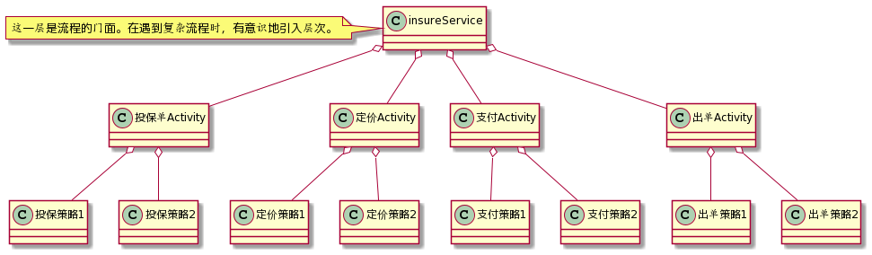</p>
<h3 id="Step5-如何实现动态激活策略？引入业务身份和业务配置"><a href="#Step5-如何实现动态激活策略？引入业务身份和业务配置" class="headerlink" title="Step5   如何实现动态激活策略？引入业务身份和业务配置"></a>Step5   如何实现动态激活策略？引入业务身份和业务配置</h3><p>其实怎么设计 context 和怎么写 context.isActivated() 是最难的。</p>
<p>一个基本的思路，每次用户提需求的时候填一个表：</p>
<figure class="highlight markdown"><table><tr><td class="gutter"><pre><span class="line">1</span><br><span class="line">2</span><br><span class="line">3</span><br><span class="line">4</span><br><span class="line">5</span><br><span class="line">6</span><br></pre></td><td class="code"><pre><code class="hljs markdown">-- 业务身份<br><span class="hljs-bullet">1.</span> 产品业务身份名称： majorIllnessInsuranceBizIdentity<br>-- 业务配置<br><span class="hljs-bullet">2.</span> xxx流程使用xxx 能力<br><span class="hljs-bullet">3.</span> xxx流程使用xxx 能力<br><span class="hljs-bullet">4.</span> xxx流程使用xxx 能力<br></code></pre></td></tr></table></figure>
<ol>
<li>2/3/4行存入数据库里。</li>
<li>上游业务系统的 请求进来的时候带入这个majorIllnessInsuranceBizIdentity。</li>
<li>请求进入 controller 的时候就把 context 里面的 xxx 能力、xxx 能力的映射表设为 true。</li>
<li>在每个 strategy 里 context.isActivated() 读这张配置表。</li>
</ol>
<p>理论上流程标准化以后，系统扩展点应该全部存在数据库里面，上产品操作数据库激活扩展点集合。</p>
<p>这就是分层架构 +  标准化流程建模 + 面向不确定性编程思想。蚂蚁的保险使用繁星策略，context 横跨多个系统；阿里淘系使用星环系统，context 可以横跨多个 bu。</p>
<h1 id="整洁架构、六边形架构和洋葱架构"><a href="#整洁架构、六边形架构和洋葱架构" class="headerlink" title="整洁架构、六边形架构和洋葱架构"></a>整洁架构、六边形架构和洋葱架构</h1><p><a target="_blank" rel="noopener" href="https://www.jianshu.com/p/d3e8b9ac097b">清晰架构(01): 融合 DDD、洋葱架构、整洁架构、CQRS…(译)</a></p>
<p>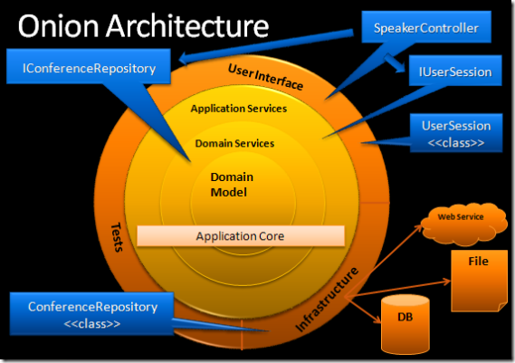<br>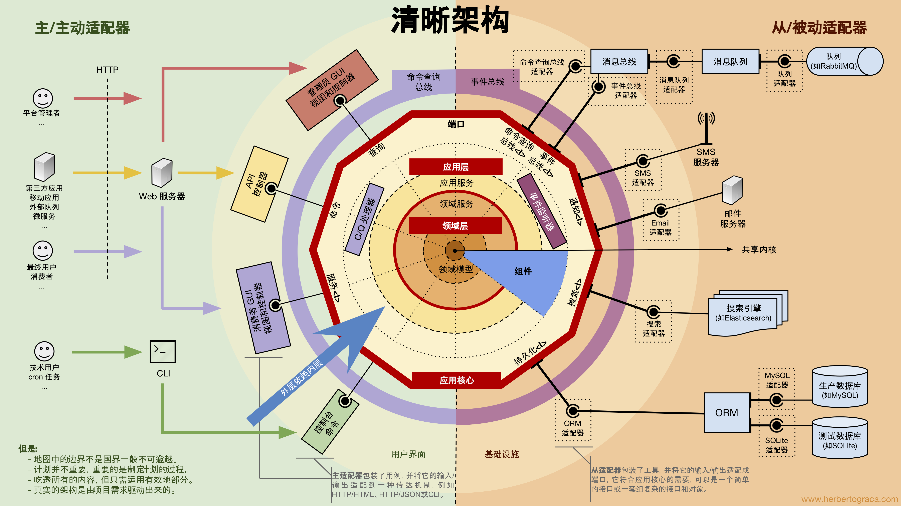<br>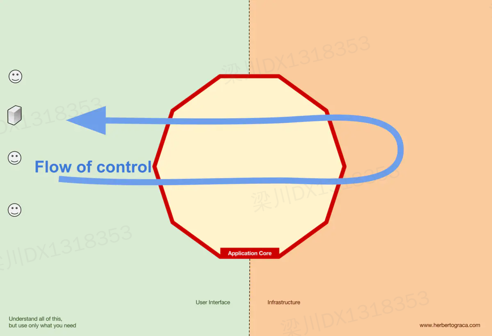</p>
</article><div class="post-copyright"><div class="post-copyright__author"><span class="post-copyright-meta">Author: </span><span class="post-copyright-info"><a href="http://magicliang.github.io">magicliang</a></span></div><div class="post-copyright__type"><span class="post-copyright-meta">Link: </span><span class="post-copyright-info"><a href="http://magicliang.github.io/2022/01/07/%E5%A6%82%E4%BD%95%E5%86%99%E5%A4%8D%E6%9D%82%E4%B8%9A%E5%8A%A1%E7%B3%BB%E7%BB%9F/">http://magicliang.github.io/2022/01/07/%E5%A6%82%E4%BD%95%E5%86%99%E5%A4%8D%E6%9D%82%E4%B8%9A%E5%8A%A1%E7%B3%BB%E7%BB%9F/</a></span></div><div class="post-copyright__notice"><span class="post-copyright-meta">Copyright Notice: </span><span class="post-copyright-info">All articles in this blog are licensed under <a target="_blank" rel="noopener" href="https://creativecommons.org/licenses/by-nc-sa/4.0/">CC BY-NC-SA 4.0</a> unless stating additionally.</span></div></div><div class="tag_share"><div class="post-meta__tag-list"><a class="post-meta__tags" href="/tags/%E7%B3%BB%E7%BB%9F%E6%9E%B6%E6%9E%84/">系统架构</a></div><div class="post_share"><div class="social-share" data-image="/2022/01/07/%E5%A6%82%E4%BD%95%E5%86%99%E5%A4%8D%E6%9D%82%E4%B8%9A%E5%8A%A1%E7%B3%BB%E7%BB%9F/clean-architecture.png" data-sites="facebook,twitter,wechat,weibo,qq"></div><link rel="stylesheet" href="https://cdn.jsdelivr.net/npm/butterfly-extsrc/sharejs/dist/css/share.min.css" media="print" onload="this.media='all'"><script src="https://cdn.jsdelivr.net/npm/butterfly-extsrc/sharejs/dist/js/social-share.min.js" defer></script></div></div><div class="relatedPosts"><div class="headline"><i class="fas fa-thumbs-up fa-fw"></i><span>Related Articles</span></div><div class="relatedPosts-list"><div><a href="/2017/10/21/%E7%B3%BB%E7%BB%9F%E7%9A%84%E5%BC%B9%E6%80%A7/" title="系统的弹性"><div class="content is-center"><div class="date"><i class="far fa-calendar-alt fa-fw"></i> 2017-10-21</div><div class="title">系统的弹性</div></div></a></div><div><a href="/2017/12/22/%E5%88%86%E5%B8%83%E5%BC%8F%E4%BA%8B%E5%8A%A1/" title="分布式事务"><div class="content is-center"><div class="date"><i class="far fa-calendar-alt fa-fw"></i> 2017-12-22</div><div class="title">分布式事务</div></div></a></div><div><a href="/2018/01/30/%E5%87%A0%E7%A7%8D%E5%85%B1%E8%AF%86%E7%AE%97%E6%B3%95/" title="几种共识算法"><div class="content is-center"><div class="date"><i class="far fa-calendar-alt fa-fw"></i> 2018-01-30</div><div class="title">几种共识算法</div></div></a></div><div><a href="/2018/04/02/%E4%B8%80%E4%B8%AA%E6%BB%9A%E5%8A%A8%E9%87%8D%E5%90%AF%E7%9A%84%E7%8A%B6%E6%80%81%E4%BF%9D%E5%AD%98%E9%97%AE%E9%A2%98/" title="一个滚动重启的状态保存问题"><div class="content is-center"><div class="date"><i class="far fa-calendar-alt fa-fw"></i> 2018-04-02</div><div class="title">一个滚动重启的状态保存问题</div></div></a></div><div><a href="/2018/11/28/%E6%AD%A3%E4%BA%A4%E6%80%A7/" title="正交性"><div class="content is-center"><div class="date"><i class="far fa-calendar-alt fa-fw"></i> 2018-11-28</div><div class="title">正交性</div></div></a></div><div><a href="/2019/08/30/%E3%80%8A%E9%AB%98%E5%8F%AF%E7%94%A8%E6%81%A2%E5%A4%8D%E6%80%9D%E8%B7%AF%E3%80%8B%E7%AC%94%E8%AE%B0/" title="《高可用恢复思路》笔记"><div class="content is-center"><div class="date"><i class="far fa-calendar-alt fa-fw"></i> 2019-08-30</div><div class="title">《高可用恢复思路》笔记</div></div></a></div></div></div></div><div class="aside-content" id="aside-content"><div class="card-widget card-info"><div class="is-center"><div class="avatar-img"></div><div class="author-info__name">magicliang</div><div class="author-info__description">关于技术以及人生</div></div><div class="card-info-data site-data is-center"><a href="/archives/"><div class="headline">Articles</div><div class="length-num">330</div></a><a href="/tags/"><div class="headline">Tags</div><div class="length-num">185</div></a><a href="/categories/"><div class="headline">Categories</div><div class="length-num">0</div></a></div><a id="card-info-btn" target="_blank" rel="noopener" href="https://github.com/magicliang"><i class="fab fa-github"></i><span>Github</span></a><div class="card-info-social-icons is-center"><a class="social-icon" href="https://github.com/magicliang" target="_blank" title="Github"><i class="fab fa-github"></i></a><a class="social-icon" href="mailto:magicliang@qq.com" target="_blank" title="Email"><i class="fas fa-envelope"></i></a></div></div><div class="card-widget card-announcement"><div class="item-headline"><i class="fas fa-bullhorn fa-shake"></i><span>Announcement</span></div><div class="announcement_content">人生只是，守株待兔</div></div><div class="sticky_layout"><div class="card-widget" id="card-toc"><div class="item-headline"><i class="fas fa-stream"></i><span>Catalog</span><span class="toc-percentage"></span></div><div class="toc-content"><ol class="toc"><li class="toc-item toc-level-1"><a class="toc-link" href="#%E5%BC%95%E8%A8%80"><span class="toc-number">1.</span> <span class="toc-text">引言</span></a></li><li class="toc-item toc-level-1"><a class="toc-link" href="#%E5%87%A0%E4%B8%AA%E5%BE%88%E5%B9%B2%E7%9A%84%E5%8E%9F%E5%88%99"><span class="toc-number">2.</span> <span class="toc-text">几个很干的原则</span></a></li><li class="toc-item toc-level-1"><a class="toc-link" href="#%E4%B8%9A%E5%8A%A1%E7%B3%BB%E7%BB%9F%E4%B8%BA%E4%BB%80%E4%B9%88%E9%9A%BE%E5%86%99%EF%BC%9F"><span class="toc-number">3.</span> <span class="toc-text">业务系统为什么难写？</span></a><ol class="toc-child"><li class="toc-item toc-level-2"><a class="toc-link" href="#%E7%BA%AF%E7%B2%B9%E7%9A%84%E4%B8%9A%E5%8A%A1%E9%A9%B1%E5%8A%A8%EF%BC%9A%E6%8A%80%E6%9C%AF%E7%9A%84%E8%BE%93%E5%85%A5%E5%92%8C%E5%86%B3%E7%AD%96%E5%AE%8C%E5%85%A8%E6%9D%A5%E6%BA%90%E4%BA%8E%E4%B8%9A%E5%8A%A1%E5%90%8C%E4%BA%8B%EF%BC%8C%E7%94%9A%E8%87%B3%E5%8F%AA%E5%8F%97%E4%B8%9A%E5%8A%A1%E6%91%86%E5%B8%83%E7%9A%84%E5%9B%A2%E9%98%9F%EF%BC%8C%E6%9E%B6%E6%9E%84%E5%AE%B9%E6%98%93%E6%B7%B7%E4%B9%B1"><span class="toc-number">3.1.</span> <span class="toc-text">纯粹的业务驱动：技术的输入和决策完全来源于业务同事，甚至只受业务摆布的团队，架构容易混乱</span></a></li><li class="toc-item toc-level-2"><a class="toc-link" href="#%E4%B8%8D%E7%90%86%E8%A7%A3%E4%B8%9A%E5%8A%A1"><span class="toc-number">3.2.</span> <span class="toc-text">不理解业务</span></a></li></ol></li><li class="toc-item toc-level-1"><a class="toc-link" href="#%E4%BB%A5%E4%B8%8A%E9%97%AE%E9%A2%98%E7%9A%84%E6%8A%BD%E8%B1%A1%E8%A7%A3%E6%B3%95"><span class="toc-number">4.</span> <span class="toc-text">以上问题的抽象解法</span></a></li><li class="toc-item toc-level-1"><a class="toc-link" href="#%E5%8D%95%E4%B8%80%E7%B3%BB%E7%BB%9F%E5%B1%82%E6%AC%A1%E5%92%8C%E6%A8%A1%E5%9D%97%E8%AE%BE%E8%AE%A1%EF%BC%88%E5%A4%A7%E5%A4%9A%E6%95%B0%E4%BA%BA%E5%8F%AF%E8%83%BD%E6%9B%B4%E5%8A%A0%E5%85%B3%E6%B3%A8%E8%BF%99%E4%B8%80%E8%8A%82%EF%BC%8C%E5%85%B6%E5%AE%9E%E5%89%8D%E9%9D%A2%E7%9A%84%E9%83%A8%E5%88%86%E6%9B%B4%E9%87%8D%E8%A6%81%EF%BC%89"><span class="toc-number">5.</span> <span class="toc-text">单一系统层次和模块设计（大多数人可能更加关注这一节，其实前面的部分更重要）</span></a><ol class="toc-child"><li class="toc-item toc-level-2"><a class="toc-link" href="#%E6%9E%B6%E6%9E%84%E5%88%86%E5%B1%82%E5%92%8C%E5%88%86%E6%A8%A1%E5%9D%97%E7%9A%84%E6%BC%94%E8%BF%9B"><span class="toc-number">5.1.</span> <span class="toc-text">架构分层和分模块的演进</span></a></li><li class="toc-item toc-level-2"><a class="toc-link" href="#%E6%88%91%E4%BB%AC%E5%9B%A2%E9%98%9F%E7%8E%B0%E5%9C%A8%E7%9A%84%E7%B3%BB%E7%BB%9F%E9%80%9A%E5%B8%B8%E6%98%AF%E4%BB%80%E4%B9%88%E6%A0%B7%E7%9A%84%EF%BC%9F"><span class="toc-number">5.2.</span> <span class="toc-text">我们团队现在的系统通常是什么样的？</span></a></li><li class="toc-item toc-level-2"><a class="toc-link" href="#%E4%B8%80%E4%B8%AA%E7%83%82%E7%B3%BB%E7%BB%9F%E9%80%9A%E5%B8%B8%E6%98%AF%E4%BB%80%E4%B9%88%E6%A0%B7%E7%9A%84%EF%BC%9F"><span class="toc-number">5.3.</span> <span class="toc-text">一个烂系统通常是什么样的？</span></a></li><li class="toc-item toc-level-2"><a class="toc-link" href="#%E5%A5%BD%E7%9A%84%E7%B3%BB%E7%BB%9F%E7%BB%99%E4%BA%BA%E7%9A%84%E6%84%9F%E8%A7%89"><span class="toc-number">5.4.</span> <span class="toc-text">好的系统给人的感觉</span></a></li><li class="toc-item toc-level-2"><a class="toc-link" href="#%E4%B8%80%E4%B8%AA%E7%B3%BB%E7%BB%9F%E5%BA%94%E8%AF%A5%E8%A2%AB%E8%AE%BE%E8%AE%A1%E6%88%90%E4%BB%80%E4%B9%88%E6%A0%B7%EF%BC%9F"><span class="toc-number">5.5.</span> <span class="toc-text">一个系统应该被设计成什么样？</span></a><ol class="toc-child"><li class="toc-item toc-level-3"><a class="toc-link" href="#Step1-%E6%90%9E%E6%B8%85%E6%A5%9A%E4%B8%9A%E5%8A%A1%E7%94%A8%E4%BE%8B%E5%92%8C%E7%B3%BB%E7%BB%9F%E7%94%A8%E4%BE%8B"><span class="toc-number">5.5.1.</span> <span class="toc-text">Step1 搞清楚业务用例和系统用例</span></a></li><li class="toc-item toc-level-3"><a class="toc-link" href="#Step2-%E7%94%A8%E4%BE%8B%E6%8B%86%E5%8F%8C%E5%B1%82%EF%BC%8C%E8%83%BD%E5%8A%9B%E4%B9%9F%E6%8B%86%E5%8F%8C%E5%B1%82"><span class="toc-number">5.5.2.</span> <span class="toc-text">Step2  用例拆双层，能力也拆双层</span></a></li><li class="toc-item toc-level-3"><a class="toc-link" href="#Step3-%E4%BD%BF%E7%94%A8-OOP-%E6%9D%A5%E4%BB%A3%E6%9B%BF-POP%EF%BC%8C%E7%94%A8%E5%91%BD%E4%BB%A4%E5%AF%B9%E8%B1%A1%E6%9D%A5%E4%BB%A3%E6%9B%BF%E5%87%BD%E6%95%B0%E8%B0%83%E7%94%A8"><span class="toc-number">5.5.3.</span> <span class="toc-text">Step3  使用 OOP 来代替 POP，用命令对象来代替函数调用</span></a></li><li class="toc-item toc-level-3"><a class="toc-link" href="#Step4-%E5%BC%95%E5%85%A5%E7%AD%96%E7%95%A5%EF%BC%8C%E6%8A%8A%E5%8F%98%E5%8C%96%E6%8B%86%E8%A7%A3%E5%88%B0%E9%A2%86%E5%9F%9F%E5%8E%9F%E5%AD%90%E8%83%BD%E5%8A%9B%E9%A2%97%E7%B2%92%E5%BA%A6"><span class="toc-number">5.5.4.</span> <span class="toc-text">Step4   引入策略，把变化拆解到领域原子能力颗粒度</span></a></li><li class="toc-item toc-level-3"><a class="toc-link" href="#Step5-%E5%A6%82%E4%BD%95%E5%AE%9E%E7%8E%B0%E5%8A%A8%E6%80%81%E6%BF%80%E6%B4%BB%E7%AD%96%E7%95%A5%EF%BC%9F%E5%BC%95%E5%85%A5%E4%B8%9A%E5%8A%A1%E8%BA%AB%E4%BB%BD%E5%92%8C%E4%B8%9A%E5%8A%A1%E9%85%8D%E7%BD%AE"><span class="toc-number">5.5.5.</span> <span class="toc-text">Step5   如何实现动态激活策略？引入业务身份和业务配置</span></a></li></ol></li></ol></li><li class="toc-item toc-level-1"><a class="toc-link" href="#%E6%95%B4%E6%B4%81%E6%9E%B6%E6%9E%84%E3%80%81%E5%85%AD%E8%BE%B9%E5%BD%A2%E6%9E%B6%E6%9E%84%E5%92%8C%E6%B4%8B%E8%91%B1%E6%9E%B6%E6%9E%84"><span class="toc-number">6.</span> <span class="toc-text">整洁架构、六边形架构和洋葱架构</span></a></li></ol></div></div><div class="card-widget card-recent-post"><div class="item-headline"><i class="fas fa-history"></i><span>Recent Post</span></div><div class="aside-list"><div class="aside-list-item"><a class="thumbnail" href="/2024/04/28/%E4%B8%8D%E5%B8%B8%E8%A7%81%E7%9A%84-SQL/" title="不常见的 SQL"></a><div class="content"><a class="title" href="/2024/04/28/%E4%B8%8D%E5%B8%B8%E8%A7%81%E7%9A%84-SQL/" title="不常见的 SQL">不常见的 SQL</a><time datetime="2024-04-28T06:30:08.000Z" title="Created 2024-04-28 14:30:08">2024-04-28</time></div></div><div class="aside-list-item"><a class="thumbnail" href="/2024/02/04/%E3%80%8A%E7%98%9F%E7%96%AB%E4%B8%8E%E9%98%B2%E7%96%AB%EF%BC%8C%E5%9C%A8%E5%8E%86%E5%8F%B2%E4%B8%8E%E7%8E%B0%E5%AE%9E%E4%B9%8B%E9%97%B4%E7%9A%84%E9%AD%94%E5%B9%BB%E4%BA%A4%E6%9B%BF%E3%80%8B/" title="《瘟疫与防疫，在历史与现实之间的魔幻交替》"></a><div class="content"><a class="title" href="/2024/02/04/%E3%80%8A%E7%98%9F%E7%96%AB%E4%B8%8E%E9%98%B2%E7%96%AB%EF%BC%8C%E5%9C%A8%E5%8E%86%E5%8F%B2%E4%B8%8E%E7%8E%B0%E5%AE%9E%E4%B9%8B%E9%97%B4%E7%9A%84%E9%AD%94%E5%B9%BB%E4%BA%A4%E6%9B%BF%E3%80%8B/" title="《瘟疫与防疫，在历史与现实之间的魔幻交替》">《瘟疫与防疫，在历史与现实之间的魔幻交替》</a><time datetime="2024-02-04T11:41:43.000Z" title="Created 2024-02-04 19:41:43">2024-02-04</time></div></div><div class="aside-list-item"><a class="thumbnail" href="/2024/01/25/%E8%AE%BA%E5%80%BA%E5%8A%A1/" title="付鹏的财经世界-论债务"></a><div class="content"><a class="title" href="/2024/01/25/%E8%AE%BA%E5%80%BA%E5%8A%A1/" title="付鹏的财经世界-论债务">付鹏的财经世界-论债务</a><time datetime="2024-01-25T12:28:30.000Z" title="Created 2024-01-25 20:28:30">2024-01-25</time></div></div><div class="aside-list-item"><a class="thumbnail" href="/2024/01/22/datawarehouse%E7%9B%B8%E5%85%B3/" title="datawarehouse相关"></a><div class="content"><a class="title" href="/2024/01/22/datawarehouse%E7%9B%B8%E5%85%B3/" title="datawarehouse相关">datawarehouse相关</a><time datetime="2024-01-22T10:32:01.000Z" title="Created 2024-01-22 18:32:01">2024-01-22</time></div></div><div class="aside-list-item"><a class="thumbnail" href="/2023/11/11/%E3%80%8A%E6%AF%9B%E6%B3%BD%E4%B8%9C%E9%80%89%E9%9B%86%E3%80%8B/" title="《毛泽东选集》"></a><div class="content"><a class="title" href="/2023/11/11/%E3%80%8A%E6%AF%9B%E6%B3%BD%E4%B8%9C%E9%80%89%E9%9B%86%E3%80%8B/" title="《毛泽东选集》">《毛泽东选集》</a><time datetime="2023-11-11T02:22:45.000Z" title="Created 2023-11-11 10:22:45">2023-11-11</time></div></div></div></div></div></div></main><footer id="footer"><div id="footer-wrap"><div class="copyright">&copy;2017 - 2024 By magicliang</div><div class="framework-info"><span>Framework </span><a target="_blank" rel="noopener" href="https://hexo.io">Hexo</a><span class="footer-separator">|</span><span>Theme </span><a target="_blank" rel="noopener" href="https://github.com/jerryc127/hexo-theme-butterfly">Butterfly</a></div></div></footer></div><div id="rightside"><div id="rightside-config-hide"><button id="readmode" type="button" title="Read Mode"><i class="fas fa-book-open"></i></button><button id="translateLink" type="button" title="Toggle Between Traditional Chinese And Simplified Chinese">簡</button><button id="darkmode" type="button" title="Toggle Between Light And Dark Mode"><i class="fas fa-adjust"></i></button><button id="hide-aside-btn" type="button" title="Toggle between single-column and double-column"><i class="fas fa-arrows-alt-h"></i></button></div><div id="rightside-config-show"><button id="rightside_config" type="button" title="Setting"><i class="fas fa-cog fa-spin"></i></button><button class="close" id="mobile-toc-button" type="button" title="Table Of Contents"><i class="fas fa-list-ul"></i></button><button id="go-up" type="button" title="Back To Top"><i class="fas fa-arrow-up"></i></button></div></div><div><script src="/js/utils.js"></script><script src="/js/main.js"></script><script src="/js/tw_cn.js"></script><script src="https://cdn.jsdelivr.net/npm/@fancyapps/ui/dist/fancybox.umd.min.js"></script><script src="https://cdn.jsdelivr.net/npm/node-snackbar/dist/snackbar.min.js"></script><div class="js-pjax"><script>(() => {
  const $mermaidWrap = document.querySelectorAll('#article-container .mermaid-wrap')
  if ($mermaidWrap.length) {
    window.runMermaid = () => {
      window.loadMermaid = true
      const theme = document.documentElement.getAttribute('data-theme') === 'dark' ? 'dark' : 'default'

      Array.from($mermaidWrap).forEach((item, index) => {
        const mermaidSrc = item.firstElementChild
        const mermaidThemeConfig = '%%{init:{ \'theme\':\'' + theme + '\'}}%%\n'
        const mermaidID = 'mermaid-' + index
        const mermaidDefinition = mermaidThemeConfig + mermaidSrc.textContent
        mermaid.mermaidAPI.render(mermaidID, mermaidDefinition, (svgCode) => {
          mermaidSrc.insertAdjacentHTML('afterend', svgCode)
        })
      })
    }

    const loadMermaid = () => {
      window.loadMermaid ? runMermaid() : getScript('https://cdn.jsdelivr.net/npm/mermaid/dist/mermaid.min.js').then(runMermaid)
    }

    window.pjax ? loadMermaid() : document.addEventListener('DOMContentLoaded', loadMermaid)
  }
})()</script></div><script defer="defer" id="ribbon" src="https://cdn.jsdelivr.net/npm/butterfly-extsrc/dist/canvas-ribbon.min.js" size="150" alpha="0.6" zIndex="-1" mobile="false" data-click="true"></script><script src="https://cdn.jsdelivr.net/npm/butterfly-extsrc/dist/activate-power-mode.min.js"></script><script>POWERMODE.colorful = true;
POWERMODE.shake = true;
POWERMODE.mobile = false;
document.body.addEventListener('input', POWERMODE);
</script><script async data-pjax src="//busuanzi.ibruce.info/busuanzi/2.3/busuanzi.pure.mini.js"></script></div></body></html>